vignettes/AomScaffolding.Rmd
AomScaffolding.Rmd
knitr::opts_chunk$set(cache = TRUE,
dev = c('png', 'svg'),
fig.ext= c('png', 'svg'),
fig.width = 10,
fig.height = 10)This vignette produces a scaffolding guide to be used with the AOM-5 genome for plotting purposes.
library('OikScrambling') |> suppressPackageStartupMessages()
library('patchwork') |> suppressPackageStartupMessages()
ggplot2::theme_set(theme_bw())
genomes <- OikScrambling:::loadAllGenomes()## Warning in runHook(".onLoad", env, package.lib, package): input string
## 'Génoscope' cannot be translated from 'ANSI_X3.4-1968' to UTF-8, but is valid
## UTF-8
## Warning in runHook(".onLoad", env, package.lib, package): input string
## 'Génoscope' cannot be translated from 'ANSI_X3.4-1968' to UTF-8, but is valid
## UTF-8
load("BreakPoints.Rdata")
# Helper function to flip many contigs at once.
flipContigsForOxfordPlot <- function(gb, flip_which=NULL) {
grl <- split(gb, seqnames(gb$query))
grl <- endoapply(grl, function(s) {
if( ! identical(unique(as.character(seqnames(s$query))), character(0)) ) {
if(unique(seqnames(s$query)) %in% flip_which ) {
s <- GenomicBreaks::reverse(s, query=TRUE)
s
}
}
s
})
ogb <- unlist(grl) |> unname()
ogb
}
# Let's remove the contigs that have their main match elsewhere.
QTcoverage <- function(gb) {
stopifnot (length(seqlevels(gb)) == 1) # Not ready for full objects
stopifnot (!any(is.na(seqlengths(gb$query))))
grl <- split(gb, seqnames(gb$query))
lapply(grl, \(gb) sum(width(gb$query))) |> unlist() / seqlengths(gb$query)
}Let’s dig in to each chromosome and try to flip Aomori appropriately.
Osa_Aom_Chr1 <- gbs$Osa_Aom |> plyranges::filter(seqnames == "Chr1")
seqlevels(Osa_Aom_Chr1) <- seqlevelsInUse(Osa_Aom_Chr1)
seqlevels(Osa_Aom_Chr1$query) <- seqlevelsInUse(Osa_Aom_Chr1$query)
makeOxfordPlots(Osa_Aom_Chr1, col='strand') + ggtitle("Everything from AOM-5 that matches OSKA's Chr1")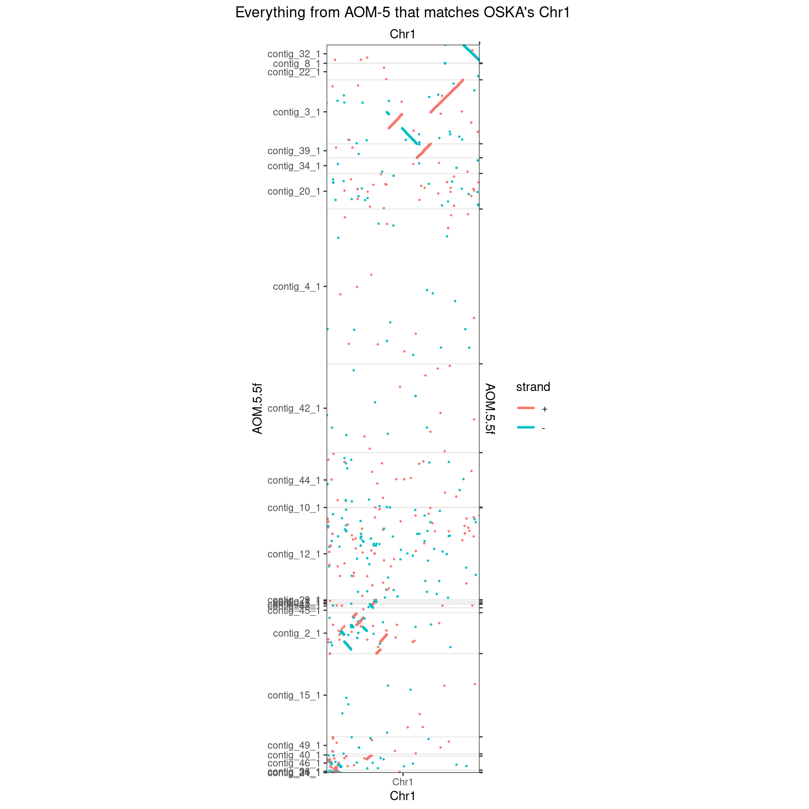
Let’s remove the contigs that have their main match elsewhere.
Osa_Aom_Chr1[
seqnames(Osa_Aom_Chr1$query) %in%
seqlevels(Osa_Aom_Chr1$query)[QTcoverage(Osa_Aom_Chr1) < 0.5]
] <- NULL
seqlevels(Osa_Aom_Chr1$query) <- seqlevelsInUse(Osa_Aom_Chr1$query)
# Some of the remaining bits are not very helpful either, so let's drop them.
Osa_Aom_Chr1 <- Osa_Aom_Chr1[seqnames(Osa_Aom_Chr1$query)!='contig_31_1']
seqlevels(Osa_Aom_Chr1$query) <- seqlevelsInUse(Osa_Aom_Chr1$query)
makeOxfordPlots(Osa_Aom_Chr1, col='strand') + ggtitle("Main hits from AOM-5 to OSKA's Chr1")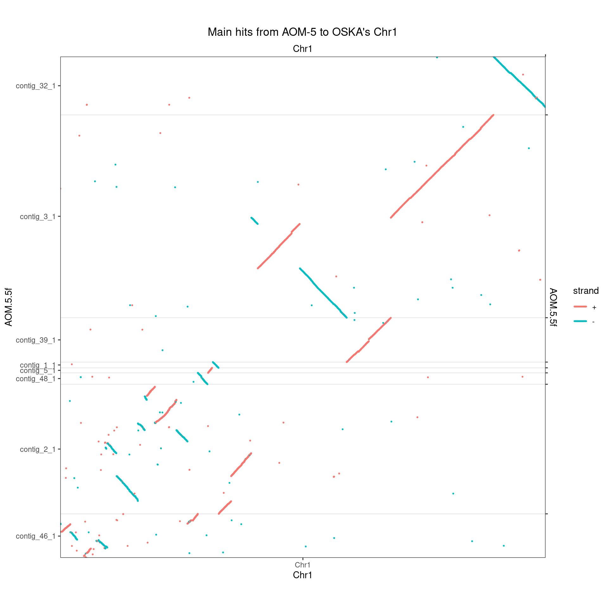
Let’s flip things around a little to get things as linear as they can be:
makeOxfordPlots(flipContigsForOxfordPlot(Osa_Aom_Chr1, flip_which = c('contig_48_1', 'contig_1_1', 'contig_39_1', 'contig_32_1')), col='strand') + ggtitle("AOM-5 contigs scaffolded and reoriented to Chr1")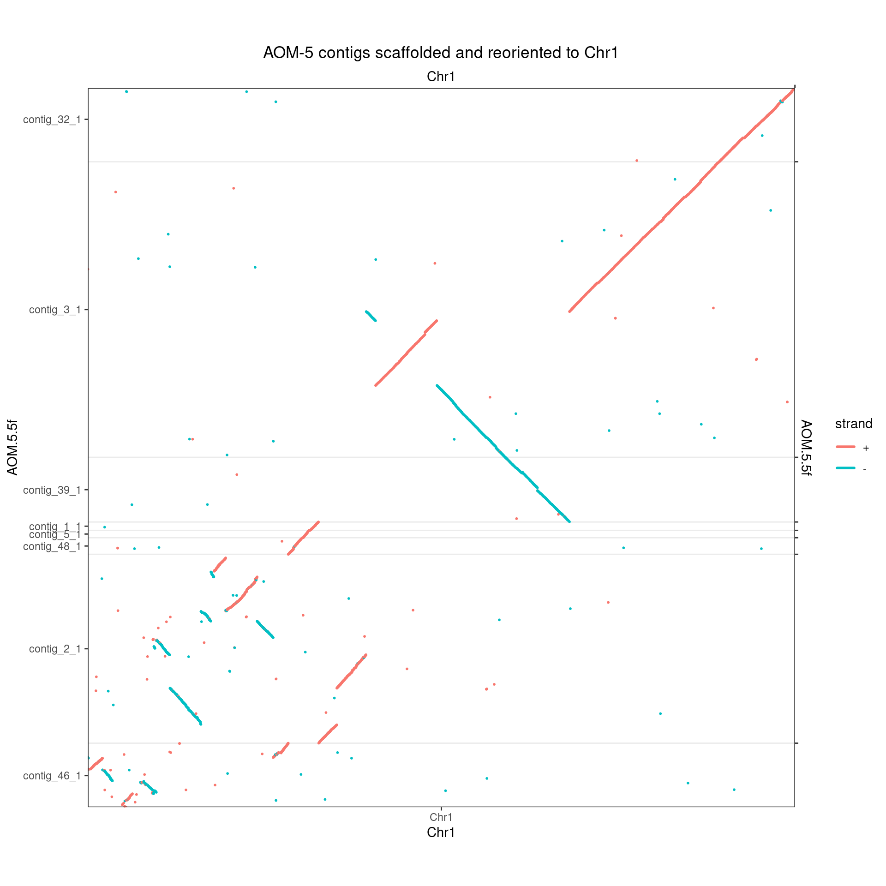
Chr1 is:
# c('contig_46_1', 'contig_2_1', rev('contig_48_1'),
# 'contig_5_1', rev('contig_1_1'), 'contig_3_1',
# rev('contig_39_1'), rev('contig_32_1'))
Osa_Aom_Chr2 <- gbs$Osa_Aom |> plyranges::filter(seqnames == "Chr2")
seqlevels(Osa_Aom_Chr2) <- seqlevelsInUse(Osa_Aom_Chr2)
seqlevels(Osa_Aom_Chr2$query) <- seqlevelsInUse(Osa_Aom_Chr2$query)
makeOxfordPlots(Osa_Aom_Chr2, col='strand') + ggtitle("Everything from AOM-5 that matches OSKA's Chr2")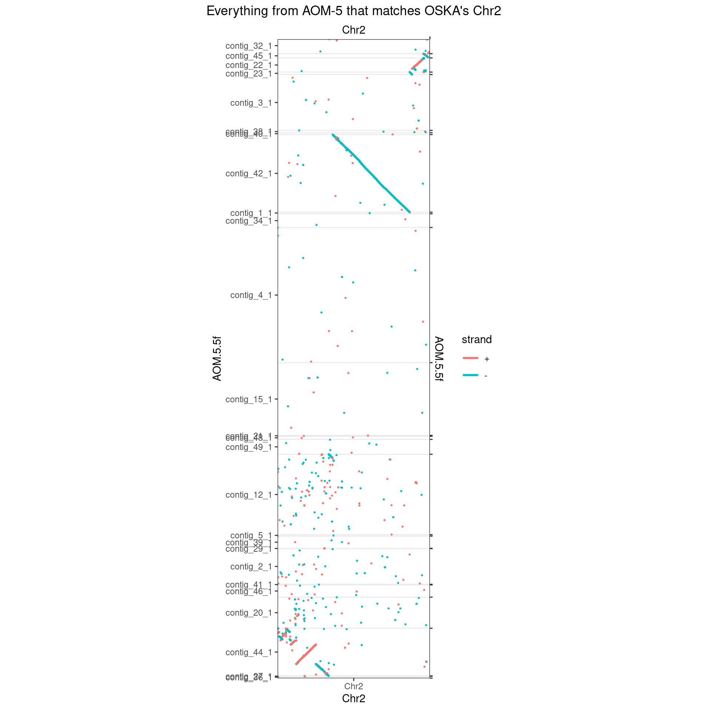
Let’s remove the contigs that have their main match elsewhere.
Osa_Aom_Chr2[seqnames(Osa_Aom_Chr2$query) %in% seqlevels(Osa_Aom_Chr2$query)[QTcoverage(Osa_Aom_Chr2) < 0.5]] <- NULL
seqlevels(Osa_Aom_Chr2$query) <- seqlevelsInUse(Osa_Aom_Chr2$query)
makeOxfordPlots(Osa_Aom_Chr2, col='strand') + ggtitle("Main hits from AOM-5 to OSKA's Chr2")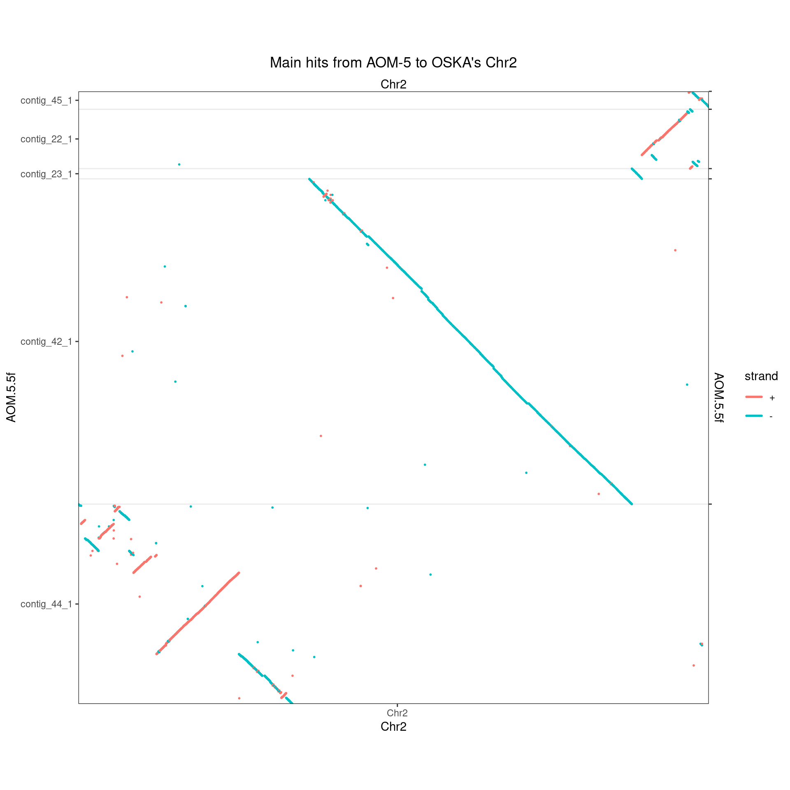
Let’s flip things around a little to get things as linear as they can be:
makeOxfordPlots( flipContigsForOxfordPlot(Osa_Aom_Chr2, flip_which = c('contig_44_1', 'contig_42_1', 'contig_23_1', 'contig_45_1')), col='strand') + ggtitle("AOM-5 contigs scaffolded and reoriented to Chr2")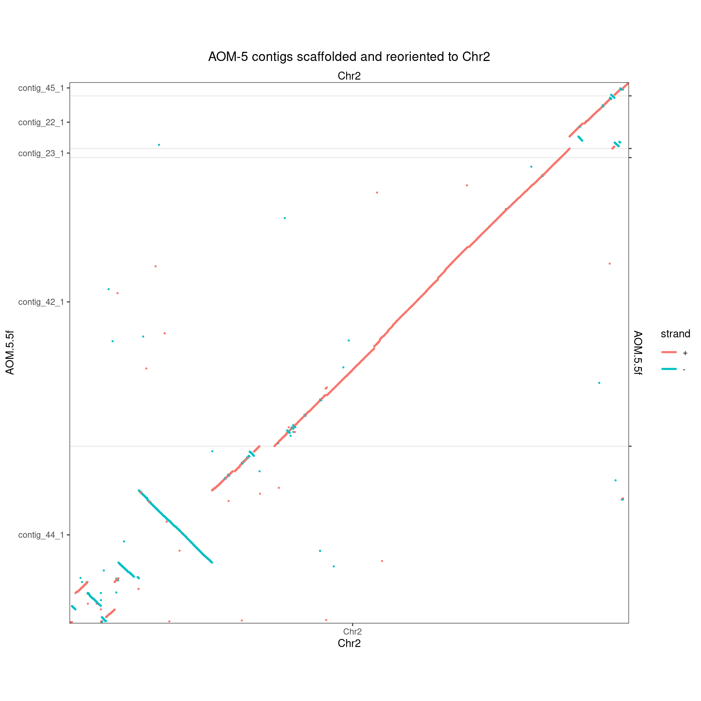
# Chr2 is:
# c(rev('contig_44_1'), rev('contig_42_1'), rev('contig_23_1'), 'contig_22_1', rev('contig_45_1'))
Osa_Aom_PAR <- gbs$Osa_Aom |> plyranges::filter(seqnames == "PAR")
seqlevels(Osa_Aom_PAR) <- seqlevelsInUse(Osa_Aom_PAR)
seqlevels(Osa_Aom_PAR$query) <- seqlevelsInUse(Osa_Aom_PAR$query)
makeOxfordPlots(Osa_Aom_PAR, col='strand') + ggtitle("Everything from AOM-5 that matches OSKA's PAR")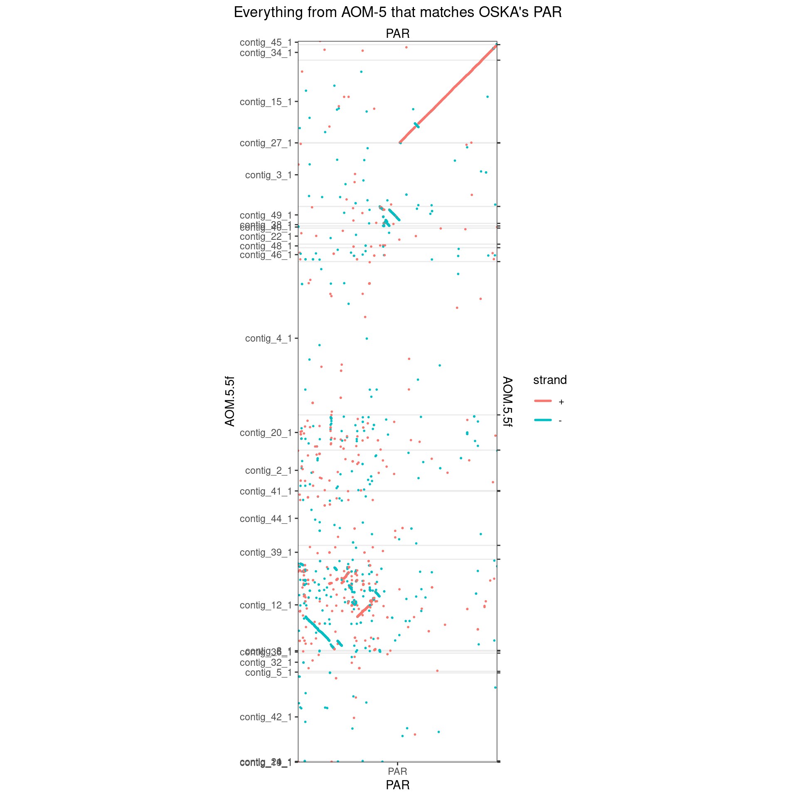
Let’s remove the contigs that have their main match elsewhere.
Osa_Aom_PAR[seqnames(Osa_Aom_PAR$query) %in% seqlevels(Osa_Aom_PAR$query)[QTcoverage(Osa_Aom_PAR) < 0.5]] <- NULL
seqlevels(Osa_Aom_PAR$query) <- seqlevelsInUse(Osa_Aom_PAR$query)
makeOxfordPlots(Osa_Aom_PAR, col='strand') + ggtitle("Main hits from AOM-5 to OSKA's PAR")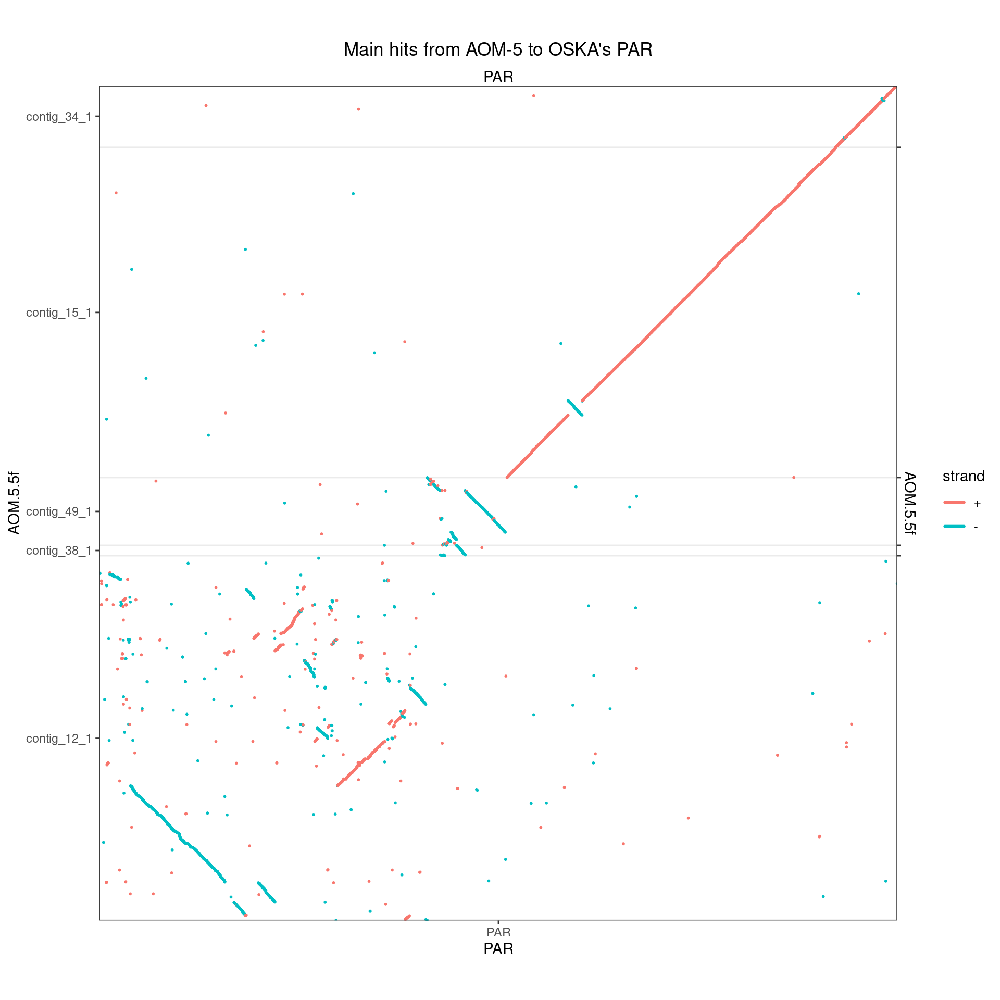
Let’s flip things around a little to get things as linear as they can be:
makeOxfordPlots( flipContigsForOxfordPlot(Osa_Aom_PAR, flip_which = c('contig_49_1', 'contig_38_1')), col='strand') + ggtitle("AOM-5 contigs scaffolded and reoriented to PAR")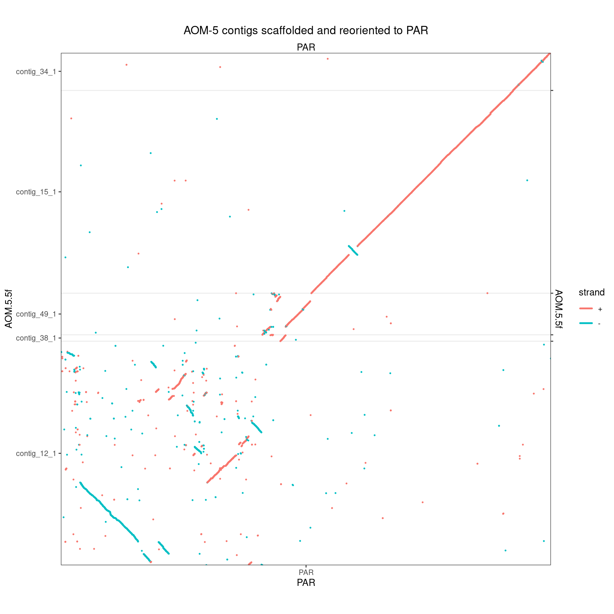
PAR is:
# c('contig_12_1', rev('contig_38_1'), rev('contig_49_1'), 'contig_15_1', 'contig_34_1'))XSR is already complete, we just need to flip it.
Osa_Aom_XSR <- gbs$Osa_Aom |> plyranges::filter(seqnames == "XSR")
seqlevels(Osa_Aom_XSR) <- seqlevelsInUse(Osa_Aom_XSR)
seqlevels(Osa_Aom_XSR$query) <- seqlevelsInUse(Osa_Aom_XSR$query)
Osa_Aom_XSR[seqnames(Osa_Aom_XSR$query) %in% seqlevels(Osa_Aom_XSR$query)[QTcoverage(Osa_Aom_XSR) < 0.5]] <- NULL
seqlevels(Osa_Aom_XSR$query) <- seqlevelsInUse(Osa_Aom_XSR$query)
makeOxfordPlots( flipContigsForOxfordPlot(Osa_Aom_XSR, flip_which = c('contig_4_1')), col='strand') + ggtitle("AOM-5 contig reoriented to XSR")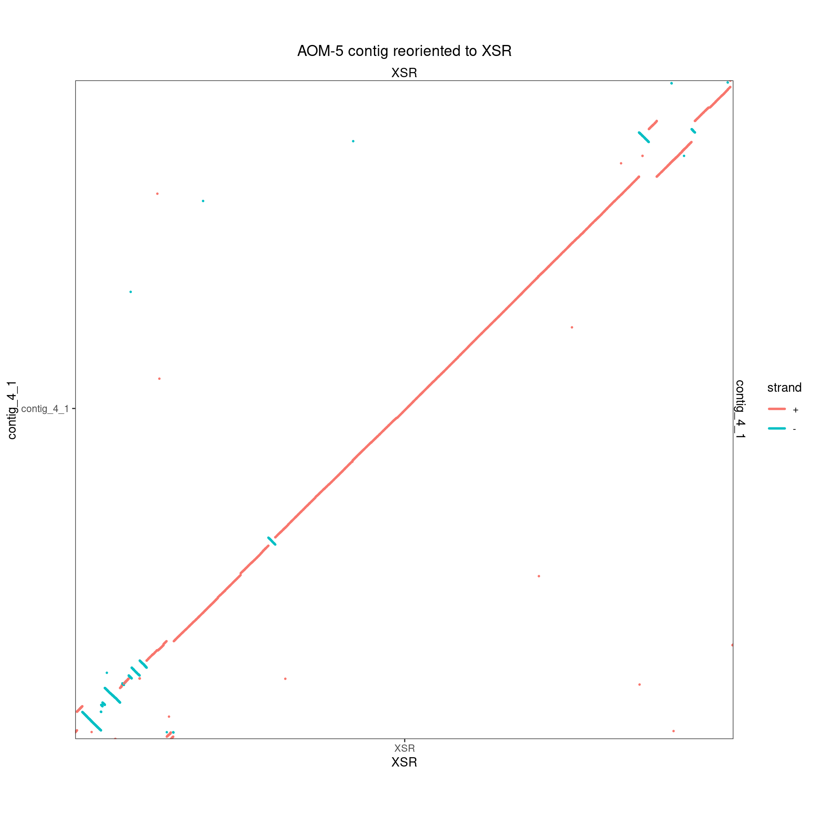
# c(rev('contig_4_1'))
Osa_Aom_YSR <- gbs$Osa_Aom |> plyranges::filter(seqnames == "YSR")
seqlevels(Osa_Aom_YSR) <- seqlevelsInUse(Osa_Aom_YSR)
seqlevels(Osa_Aom_YSR$query) <- seqlevelsInUse(Osa_Aom_YSR$query)
makeOxfordPlots(Osa_Aom_YSR, col='strand')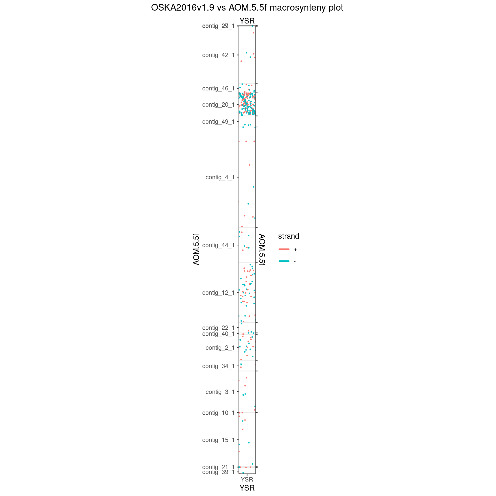
# YSR is contig_20_1
Osa_Aom_YSR <- Osa_Aom_YSR[seqnames(Osa_Aom_YSR$query) == "contig_20_1"]
# Let's flip things around a little to get things as linear as they can be:
makeOxfordPlots( flipContigsForOxfordPlot(Osa_Aom_YSR, flip_which = c('contig_20_1')), col='strand')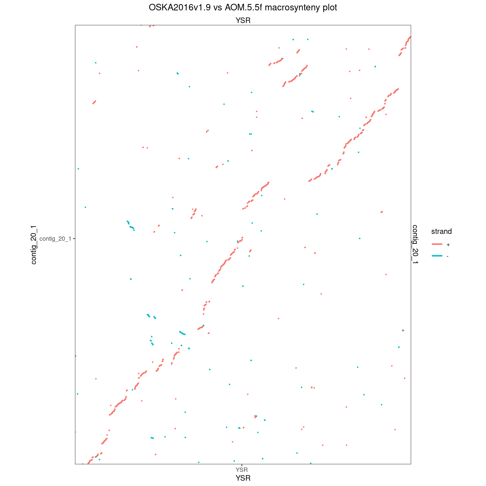
# c(rev('contig_20_1'))
aom_scaffolds <- list(
'Chr1'=data.frame(
contig=c('contig_46_1', 'contig_2_1', 'contig_48_1',
'contig_5_1', 'contig_1_1', 'contig_3_1',
'contig_39_1', 'contig_32_1'),
orientation=c(1, 1, -1,
1, -1, 1,
1, -1)),
'Chr2'=data.frame(
contig=c('contig_44_1', 'contig_42_1', 'contig_23_1',
'contig_22_1', 'contig_45_1'),
orientation=c(-1, -1, -1,
1, -1)),
'PAR'=data.frame(
contig=c('contig_12_1', 'contig_38_1', 'contig_49_1',
'contig_15_1', 'contig_34_1'),
orientation=c(1, -1, -1,
1, 1)),
'XSR'=data.frame(
contig='contig_4_1',
orientation=-1),
'YSR'=data.frame(
contig=c('contig_20_1'),
orientation=1)
)
# Store the results in the package for re-use in other vignettes
if(!exists("scafs")) {
scafs <- SimpleList()
scafs$Aom_Osa <- aom_scaffolds
# usethis::use_data(scafs)
} else {
identical(aom_scaffolds, OikScrambling::scafs$Aom_Osa)
}## [1] TRUE
scaf_Aom_Osa <- scaffoldByFlipAndMerge(gbs$Osa_Aom |> swap(), aom_scaffolds, drop = TRUE) |> swap()
scaf_Aom_Osa |> makeOxfordPlots()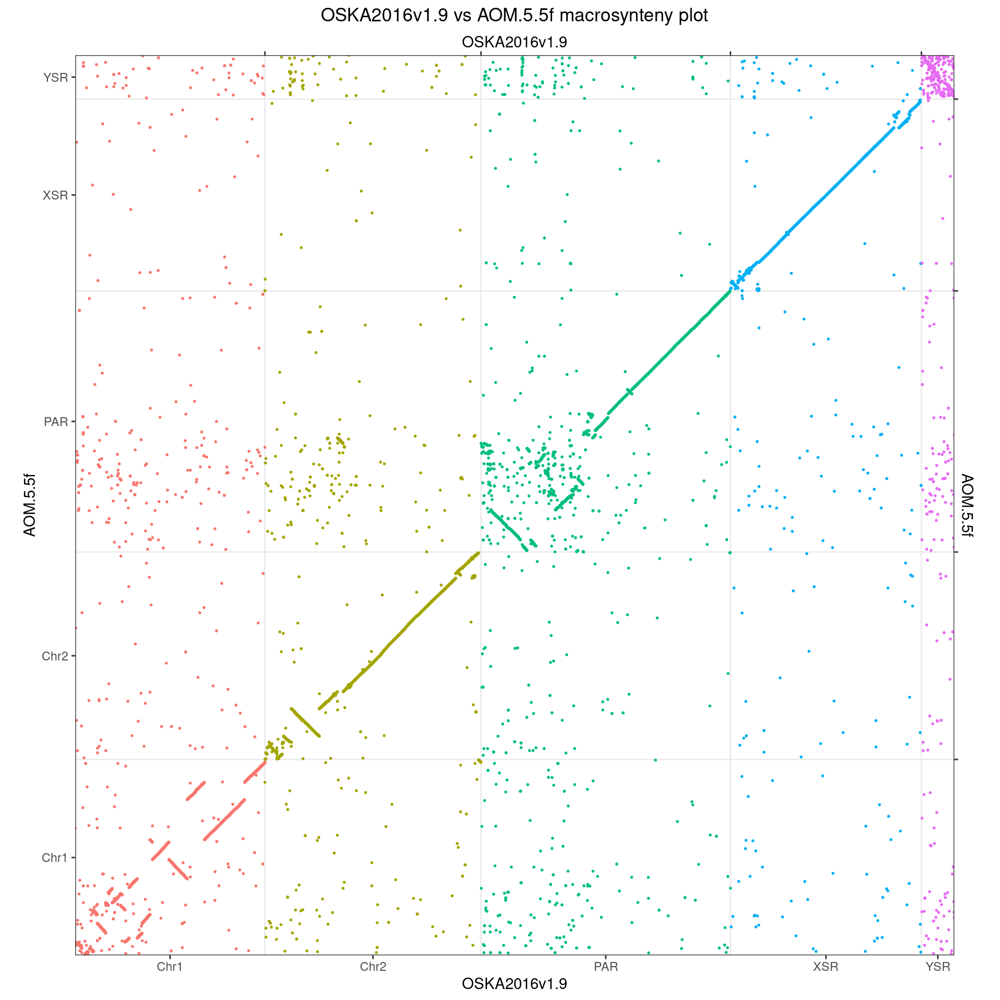
# Original plot for comparison
gbs$Osa_Aom |> makeOxfordPlots()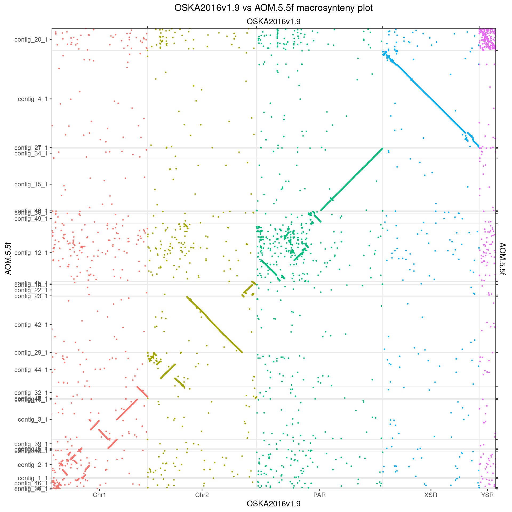